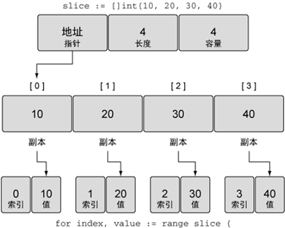

Go语言range关键字：循环迭代切片
通过前面的学习我们了解到切片其实就是多个相同类型元素的连续集合，既然切片是一个集合，那么我们就可以迭代其中的元素，Go语言有个特殊的关键字 range，它可以配合关键字 for 来迭代切片里的每一个元素，如下所示：
关于 for 的详细使用我们将在下一章《Go语言流程控制》中为大家详细介绍。
上面代码的输出结果为：
需要强调的是，range 返回的是每个元素的副本，而不是直接返回对该元素的引用，如下所示。
【示例 1】range 提供了每个元素的副本
如果不需要索引值，也可以使用下划线
【示例 2】使用空白标识符（下划线）来忽略索引值
【示例 3】使用传统的 for 循环对切片进行迭代
当然，range 关键字不仅仅可以用来遍历切片，它还可以用来遍历数组、字符串、map 或者通道等，这些我们将在后面的学习中详细介绍。
// 创建一个整型切片，并赋值
slice := []int{10, 20, 30, 40}
// 迭代每一个元素，并显示其值
for index, value := range slice {
fmt.Printf("Index: %d Value: %d\n", index, value)
}
第 4 行中的 index 和 value 分别用来接收 range 关键字返回的切片中每个元素的索引和值，这里的 index 和 value 不是固定的，读者也可以定义成其它的名字。关于 for 的详细使用我们将在下一章《Go语言流程控制》中为大家详细介绍。
上面代码的输出结果为：
Index: 0 Value: 10
Index: 1 Value: 20
Index: 2 Value: 30
Index: 3 Value: 40

图：使用 range 迭代切片会创建每个元素的副本
图：使用 range 迭代切片会创建每个元素的副本
需要强调的是，range 返回的是每个元素的副本，而不是直接返回对该元素的引用，如下所示。
【示例 1】range 提供了每个元素的副本
// 创建一个整型切片，并赋值
slice := []int{10, 20, 30, 40}
// 迭代每个元素，并显示值和地址
for index, value := range slice {
fmt.Printf("Value: %d Value-Addr: %X ElemAddr: %X\n", value, &value, &slice[index])
}
输出结果为：
Value: 10 Value-Addr: 10500168 ElemAddr: 1052E100
Value: 20 Value-Addr: 10500168 ElemAddr: 1052E104
Value: 30 Value-Addr: 10500168 ElemAddr: 1052E108
Value: 40 Value-Addr: 10500168 ElemAddr: 1052E10C
如果不需要索引值，也可以使用下划线
_来忽略这个值，代码如下所示。【示例 2】使用空白标识符（下划线）来忽略索引值
// 创建一个整型切片，并赋值
slice := []int{10, 20, 30, 40}
// 迭代每个元素，并显示其值
for _, value := range slice {
fmt.Printf("Value: %d\n", value)
}
输出结果为：
Value: 10
Value: 20
Value: 30
Value: 40
【示例 3】使用传统的 for 循环对切片进行迭代
// 创建一个整型切片，并赋值
slice := []int{10, 20, 30, 40}
// 从第三个元素开始迭代每个元素
for index := 2; index < len(slice); index++ {
fmt.Printf("Index: %d Value: %d\n", index, slice[index])
}
输出结果为：
Index: 2 Value: 30
Index: 3 Value: 40
当然，range 关键字不仅仅可以用来遍历切片，它还可以用来遍历数组、字符串、map 或者通道等，这些我们将在后面的学习中详细介绍。
关注公众号「站长严长生」，在手机上阅读所有教程，随时随地都能学习。内含一款搜索神器，免费下载全网书籍和视频。

微信扫码关注公众号